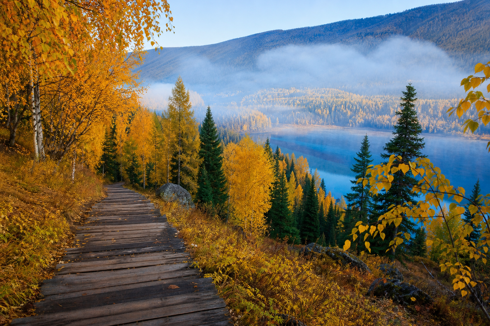

从贾登峪到禾木的秋日童话——白桦金黄、湖水碧蓝，穿越中国最美的秋色走廊。
大部分人去喀纳斯，是坐景区区间车走马观花——卧龙湾停车拍照五分钟，月亮湾停车拍照五分钟，神仙湾再停五分钟，然后就去游船了。但真正的喀纳斯，藏在那些区间车不停留的小径上，藏在只有双脚才能抵达的视角里。从贾登峪到禾木的徒步线，全程约35公里，两天走完，一路经过白桦林、高山草甸、图瓦人牧场，终点是晨雾中的禾木村——有人说这是中国最美的徒步路线之一，我走完后想说，"之一"两个字可以去掉。
早上八点从贾登峪出发。第一个小时是爬升段，沿着马道翻过一个小山梁，回头就能看到贾登峪的毡房越来越小。翻过垭口之后，喀纳斯河突然出现在脚下——那种蓝，介于翡翠和绿松石之间，像有人在水里倒了颜料。
接下来沿河谷一路向北，白桦林越来越密。9月底的白桦叶子正好是金黄色的巅峰期，阳光穿透叶片，整片林子像被点燃了一样。脚下是厚厚的落叶，踩上去沙沙响。中午在河边找了块大石头吃午饭——馕、火腿肠、榨菜，徒步者的豪华套餐。
下午的路段经过一片高山牧场，成群的牛羊在远处吃草，牧羊人骑马路过时会朝你挥手。傍晚六点抵达半路客栈——说是客栈，其实就是几间木屋，但有热水和热饭，在徒步一天之后已经是天堂。晚上推开木门，抬头就是银河，清冷的高原空气里混着松木的香味。

第二天天亮出发，晨雾还没散，河谷里飘着一层薄薄的白纱。这一段是整个徒步的精华——白桦林更密，河湾更美，而且路面几乎是平缓的下坡，走起来轻松很多。
翻过最后一个山梁时，禾木村出现在山谷对岸——几十座尖顶木屋散落在金色的白桦林间，青灰色的炊烟从屋顶升起，整个村子被晨光镀上一层暖橙色。那一瞬间徒步所有的疲惫都值了。涉水过禾木河（水很冰但很浅），下午两点抵达禾木村。
在村里的民宿安顿好，去河边洗了把脸，然后爬上村后的观景台。俯瞰整个禾木村——木屋、炊烟、金色的树林、远处积雪的山峰，像一幅立体的油画。晚上在民宿吃图瓦大姐做的抓饭和手抓羊肉，喝马奶酒，听她用生硬的普通话讲图瓦人的故事。
第三天清晨六点半，气温接近零度，披着民宿的军大衣爬上观景台。平台上已经架满了三脚架——禾木的晨雾是摄影圈的传说。太阳从山脊后面升起的过程中，河谷里的雾气开始翻滚、变化，先是蓝灰色，然后被染成粉色，最后在阳光穿透的那一刻变成金黄色。木屋、炊烟、晨雾、日出——这就是禾木的早晨，值得你裹着被子在零度的空气里站一个小时。